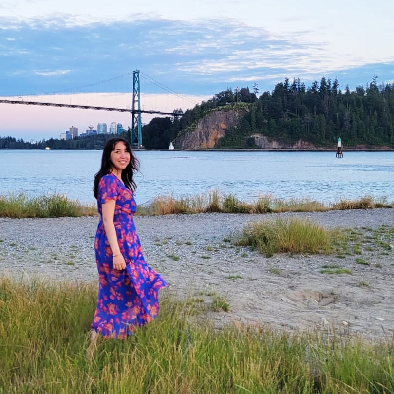

I’m Anisa, a Vancouver-based UX/UI and Graphic Designer who values
clarity and thoughtful design. My path started in graphic
design, but over time I felt drawn to deeper problem-solving and
human-centred work. I returned to school to study Interaction
Design at Capilano University and have since been growing through
real projects, collaboration, and continuous learning.
I’m especially interested in simplifying complex ideas and
designing experiences that feel clear, supportive, and accessible.
My work combines visual design, research, and systems thinking to
create products that help people feel confident and understood.
This website? I designed and built it myself using HTML and
CSS. It reflects my curiosity and my love for bridging design and
front-end development.
SKiLLS
Figma, Miro, Adobe Suite (Photoshop, Illustrator, InDesign, Firefly), HTML5, CSS, Blender, MS Office Suite, GitHub, Visual Studio Code
EXPERiENCE & EDUCATiON
APR 2023 – PRESENT
UX/UI, Web & Graphic Design Freelancer
JUN 2021 - PRESENT
Founder & Designer of Seed the Hope
FEB 2025 – MAR 2025
Junior Product Designer (co-op), Westland Insurance Group
Ltd.
SEP 2023 – APR 2025
Interaction Design Diploma, Capilano University
OCT 2021 – OCT 2023
Graphic Designer, Atlantia Co.
DEC 2019 – JAN 2021
Graphic Designer, Linhan Design & Interiors Co.
OCT 2019 – MAR 2020
Sales Representative, London Drugs
SEP 2013 – FEB 2018
BA in Graphic Design (Hons), University of
Hertfordshire
SEP 2009 – DEC 2009
English Language Instructor, Hanbit School for Blind
Children
